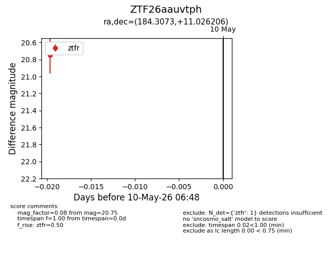
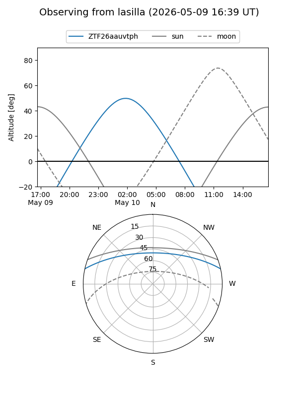
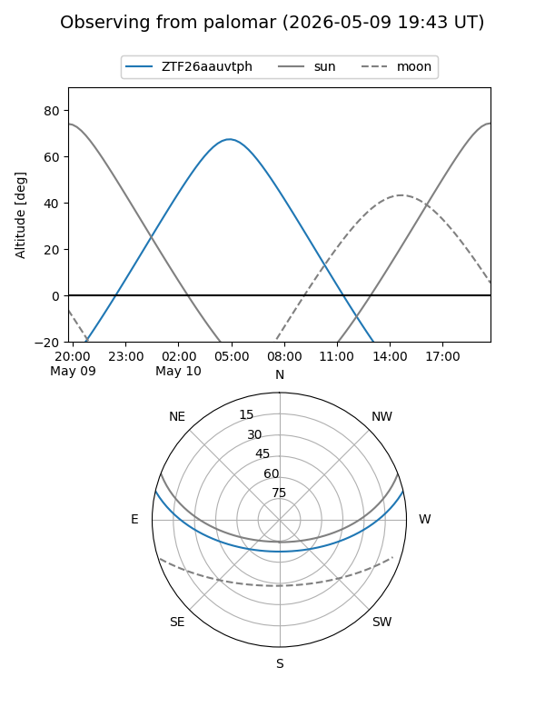

ZTF26aauvtph
Target ZTF26aauvtph at 2026-05-10 06:49
Aliases and brokers:
FINK: link
Lasair: link
ALeRCE: link
alt names
ZTF26aauvtph (ztf,fink_ztf)
Coordinates:
equatorial (ra, dec) = 184.3073,+11.02621
equatorial (HMS+DMS) = 12:17:13.75,+11:01:34.34
galactic (l, b) = (274.7450,+71.99991)
Flags:
Photometry:
last ztfr=20.75
1 ztfr detections
Lightcurve

Visibility


Additional plots